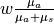
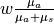

Simulator options¶
Simulator options are used to customize the OpenCL kernel. All kernel
options are derived from the xopto.mcbase.mcoptions.McOption class.
The boolean options are implemented
by subclassing McBoolOption,
the integer options
by subclassing McIntOption,
the floating-point
options by subclassing McFloatOption and
the data type options
by subclassing McTypeOption.
The xopto.mcbase.mcoptions is also conveniently imported into the
xopto.mcvox.mc and xopto.mcvox.mcoptions modules.
The list of available options is as follows:
McUseBallisticKernel(default isoff) - can be used to switch to ballistic implementation of the Monte Carlo kernel. The ballistic Monte Carlo kernel either scatters or fully absorbs the packet in each simulation step that does not intersect the boundaries of the current material (e.g. voxel or layer). The probability of the outcome depends on the values of the absorption coefficient , scattering
coefficient
, scattering
coefficient  and a random number sampled from a
uniform distribution
and a random number sampled from a
uniform distribution ![[0, 1]](../../_images/math/8027137b3073a7f5ca4e45ba2d030dcff154eca4.png) :
:if
 - fully absorb else scatter
the packet according to the scattering phase function
- fully absorb else scatter
the packet according to the scattering phase function
Note that in the ballistic Monte Carlo kernel the photon packets do not undergo termination through weight threshold and / or lottery and hence the values of options
McMinimumPacketWeightandMcUseLotteryare not used by the ballistic kernel. In contrast, the regular Monte Carlo kernel terminates the photon packets through the mechanisms of weight threshold and lottery. In each simulation step that does not intersect with the boundaries of the current material, the weight of the photon packet is reduced by
.
The ballistic and regular Monte Carlo kernel converge towards the same
solution. While the ballistic kernel is faster it produces significantly
more noisy results than the regular kernel.
of the photon packet is reduced by
.
The ballistic and regular Monte Carlo kernel converge towards the same
solution. While the ballistic kernel is faster it produces significantly
more noisy results than the regular kernel.McUseNativeMath(default isoff) - can be used to enable device-native math functions. Native math usually gives some performance benefit, but might not be fully compliant with precisions defined by the IEEE standards.McMaterialMemory(default isglobal_mem) - OpenCL memory type used to store the array of materials. Selectingconstant_memmemory will likely lead to a performance boost, in particular on older GPUs. However, note that the amount of available constant (constant_mem) memory on GPUs is typically limited to about 64k. The constant memory is also used to hold some performance-critical simulator data and can be also used to hold lookup table data of integer or floating-point type.McIntLutMemory(default isconstant_mem) - OpenCL memory type used to hold the integer type lookup table data. Selectingglobal_memmemory will likely lead to a significant performance degradation, in particular on older GPUs. Note that the amount of available “constant_mem” memory on GPUs is typically limited to about 64k.McFloatLutMemory(default isconstant_mem) - OpenCL memory type used to hold the floating-point type lookup table data. Selectingglobal_memmemory will likely lead to a significant performance degradation, in particular on older GPUs. Note that the amount of available “constant_mem” memory on GPUs is typically limited to about 64 kB.McDebugMode(default isoff) - Can be used to enable kernel debug mode that will print information to the console output. Note that this mode requires printf functionality in the OpenCL kernel that might not be supported by all OpenCL devices. If this mode is turned onon, run the Monte Carlo simulator with one or a small number of photon packets.McUseSoft64Atomics(default isoff) - Can be used to force software implementation of 64-bit atomic operations.McUseLottery(default ison) - Can be used to disable termination of photon packets through lottery.McMinimumPacketWeight(default is 10 -4) - Sets the minimum photon packet weight allowed before starting packet termination or lottery.McPacketLotteryChance(default is 0.1) - Terminate photon packet by lottery if the value of a uniform random number from [0, 1] exceeds this value.McUsePackedStructures(default isoff) - Can be used to force the use of tightly packed structures in the OpenCL code. Note that packed structures can lead to significant performance degradation of the MonteCarlo kernel. This option is the last resort if the fields of the OpenCL and host structures cannot be properly aligned. When declaring OPenCL or host structures always start with the largest data type and move towards smaller data types. Use data types that are of size no less than 4 bytes.